고속도로 주행 보조 작동
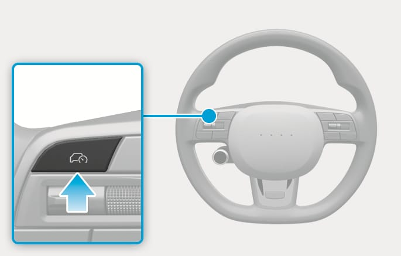
2C_DrivingAssistButton
고속도로 주행 보조가 작동 가능한 도로 주행 시, 스티어링 휠의 주행 보조 (
-
스마트 크루즈 컨트롤과 차로 유지 보조가 켜진 상태에서, 작동 가능한 도로로 진입한 경우 자동으로 작동합니다.
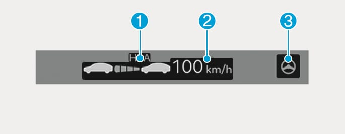
2C_HDAActiveIndicatorInfo_2
고속도로 주행 보조의 상태에 따라 클러스터에 표시되는 항목은 다음과 같습니다.
(1) 고속도로 주행 보조 (
-
초록색: 작동 상태
-
회색: 대기 상태
-
흰색 깜빡임: 가속 페달을 밟은 상태
-
미표시: 꺼짐 상태
(2) 스마트 크루즈 컨트롤 작동 상태
(3) 차로 유지 보조 작동 상태
스마트 크루즈 컨트롤이 일시적으로 해제되면 고속도로 주행 보조는 대기 상태가 됩니다. 차로 유지 보조는 정상적으로 작동합니다.
-
차로 유지 보조의 상세 내용 및 제한 사항은 '차로 유지 보조 (LFA)'를 참고하십시오.
-
스마트 크루즈 컨트롤의 상세 내용 및 제한 사항은 '스마트 크루즈 컨트롤 (SCC)'을 참고하십시오.
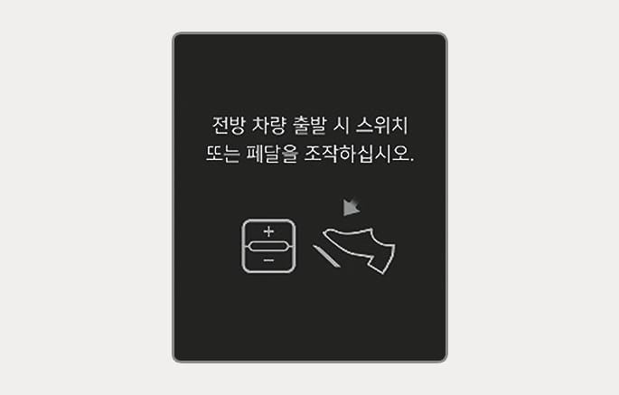
2C_SCCReStart
고속도로 주행 보조 작동 중에는 앞 차량이 정차하면 따라서 정차합니다. 정차 후 약 30초 내에 앞 차량이 출발하면 자동으로 출발합니다.
정차 후 약 30초가 지나면 클러스터에 안내문 "전방 차량 출발 시 스위치 또는 페달을 조작하십시오"가 표시됩니다. 다시 출발하려면 가속 페달을 밟거나, + 또는 - 스위치를 올리거나 내리거나,
핸즈오프 경고
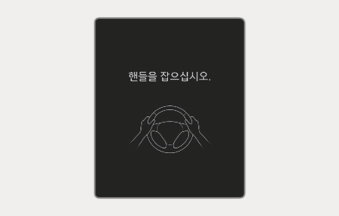
2C_HandOffWarning
일정 시간 동안 스티어링 휠을 잡지 않으면 단계적으로 핸즈오프 경고문이 표시되고 경고음이 울립니다.
-
1단계: 경고문 "핸들을 잡으십시오" 표시
-
2단계: 경고문 (빨간색 스티어링 휠) 표시 및 경고음 울림
고속도로 주행 보조 해제
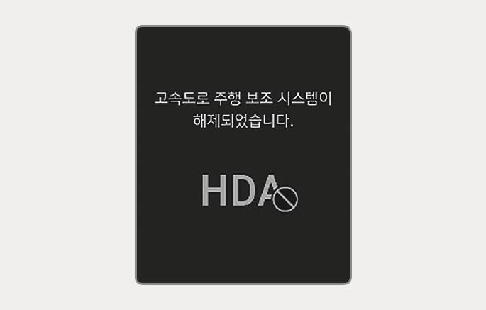
2C_HDADeactivatedWarning
계속해서 스티어링 휠을 잡지 않으면, 경고문 "고속도로 주행 보조 시스템이 해제되었습니다." 표시와 함께 고속도로 주행 보조와 차로 유지 보조가 동시에 꺼집니다.
주행속도 제한
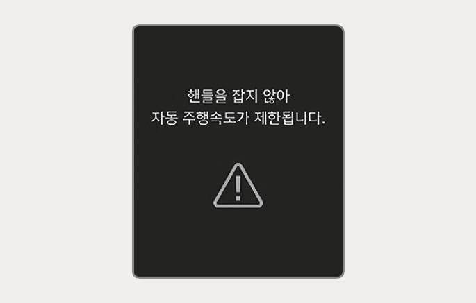
2C_HDAHandOffWarning
핸즈오프에 의해 고속도로 주행 보조가 꺼지면 주행속도가 제한됩니다. 주행속도 제한 기능이 작동하는 중에는 지속해서 경고문이 표시되고 경고음이 울립니다.
-
주행속도 제한 작동 시 주행속도를 60 km/h 이하로 제한합니다. 앞 차량을 따라 감속하지만 가속은 하지 않습니다.
-
다음과 같은 경우에는 주행속도 제한이 해제됩니다.
-
다시 스티어링 휠을 잡은 경우
-
차로 주행 보조 (
p ) 버튼을 눌러 차로 유지 보조를 켜는 경우 -
+, -,
ç 버튼, 가속 페달, 브레이크 페달을 조작하는 경우
-
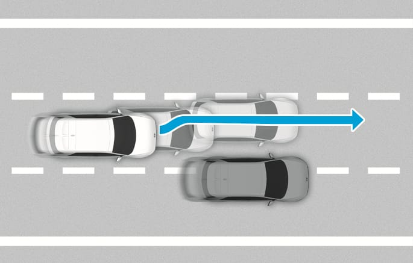
2C_HDADrivingToOneSide
주행속도가 60 km/h 이상인 경우, 옆 차로에 근접 차량이 있으면 차로 내에서 반대 방향으로 편향하여 주행하도록 도와줍니다. 옆 차로 모두에 근접 차량이 있으면 편향하여 주행하지 않습니다.
차로를 변경할 방향으로 방향지시등을 작동 시키면 차로변경이 가능한지 판단하고 안전하게 차로를 변경하도록 도와줍니다.

2C_HDALaneChangeAssistFuntion
작동 상태 표시
고속도로 차로변경 보조 기능의 상태 표시를 보려면 클러스터를 주행 보조 뷰로 설정하십시오.
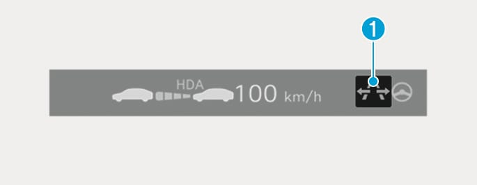
2C_HighwayLaneChangeAssistIndicator
기능의 상태에 따라 클러스터에 고속도로 차로변경 보조 (
-
초록색으로 켜짐: 작동 가능한 상태
-
초록색으로 깜빡임: 작동 상태
-
회색으로 켜짐: 대기 상태
-
흰색으로 깜빡임: 취소 상태(일정 시간만 표시)
작동 가능한 상태
다음의 조건이 모두 만족되면 고속도로 차로변경 보조는 작동 가능한 상태가 됩니다.
-
고속도로 주행 보조 작동
-
차로 유지 보조 작동
-
시동이 걸린 이후 후방 차량이 한 번 이상 인식됨
-
주행 속도가 30 km/h 이상
-
저속 주행 시 (30-60 km/h) 에는 좌우 인접 차로 내 후측방의 차량이 인식되고 차로 변경 시 충돌 위험이 없다고 판단 되는 경우
-
핸즈오프 경고문이 표시되지 않음
-
비상 경고등 꺼짐
고속도로 차로변경 보조 기능을 켜려면 다음 중 하나의 방법을 사용하십시오.
-
해당 스위치 또는 버튼을 조작하여 고속도로 주행 보조를 켜십시오. 고속도로 차로변경 보조 기능이 함께 켜집니다.
-
클러스터에 고속도로 차로변경 보조 기능의 사용 여부를 묻는 안내문이 표시될 때 OK를 누르십시오.
-
고속도로 차로변경 보조 기능이 켜져 있을 때(표시등 켜짐)는 방향지시등 또는 비상 경고등이 켜져도 차로 유지 보조가 일시 중지되지 않습니다.
-
다음과 같은 도로 구간에 진입하거나 주행하면 고속도로 차로변경 보조 기능은 자동으로 꺼집니다.
-
편도 1차로인 도로 구간
-
전방에 교차로 또는 횡단보도가 있는 도로 구간
-
물리적인 중앙 분리 구조물(가드레일 등)이 없는 도로 구간
-
전방에 보행자 또는 자전거가 있는 도로
-
-
작동 가능한 상태에서 주행속도가 25 km/h 이하가 되면 대기 상태로 변경됩니다.
-
저속 주행 시 (30-60 km/h) 좌우 인접 차로 내 후측방 차량이 인식되지 않은 경우 대기 상태로 변경됩니다.
-
충돌위험이 있다고 판단되는 경우 대기 상태로 변경됩니다.
고속도로 차로변경 보조 기능이 작동 중에 꺼지면 조향 보조가 일시 중지됩니다. 주의하여 운전하십시오.
차로변경 보조 작동 상태
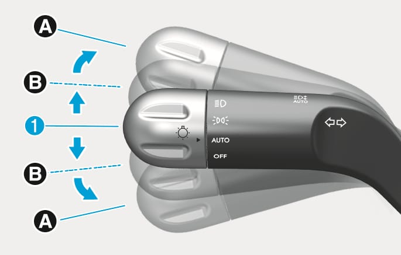
2C_HDALaneChangeSwitchOperation
작동 가능한 상태에서 운전자가 방향지시등 스위치를 (A) 또는 (B)에 위치시키고, 아래 조건이 모두 만족되면 차로변경 보조 작동 상태가 됩니다.
-
스티어링 휠 잡은 상태임
-
차로변경 방향의 차로에 충돌 위험 없음
-
차로변경 방향의 차로에 단일 점선 차선이 있음
-
전방 충돌방지 보조 및 후측방 충돌방지 보조의 경고 없음
-
차로 중앙 주행 중임(편향되지 않은 상태)
-
주행 중인 도로와 차로변경 방향의 차로가 작동 가능한 도로임
-
방향지시등 스위치를 (A)에 위치시키면 고속도로 차로변경 보조 기능을 수행합니다. 이후에 방향지시등 스위치를 중앙(1)으로 위치시키면 차선을 밟기 전에는 취소되고 차선을 밟은 이후에는 취소되지 않고 차로변경을 완료하고 방향지시등이 꺼집니다.
-
방향지시등 스위치를 (B)에 위치시키면 고속도로 차로변경 보조 기능을 수행합니다. 이후에는 방향지시등 스위치가 중앙(1)으로 돌아가더라도 계속해서 차로변경을 도와줍니다.
작동 상태에서는 방향지시등 스위치를 잡고 있지 않아도 내부 및 외부의 방향지시등이 깜빡입니다. 차로변경이 완료되면 자동으로 꺼집니다.
-
본선의 진입로 또는 진출로는 고속도로 차로변경 보조 기능이 작동 가능한 도로가 아닙니다.
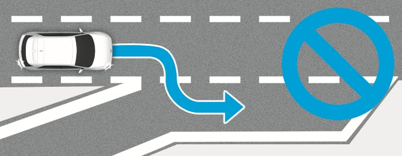
2C_HighwayLaneChangeAssistDisable
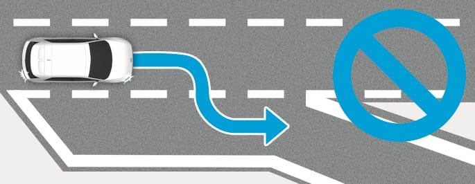
2C_HighwayLaneChangeAssistDisable_2
대기 상태
작동 가능한 상태의 조건이 만족되지 않거나, 다음과 같은 도로에 진입하거나 주행하면 고속도로 차로변경 보조 기능은 대기 상태가 됩니다.
-
작동 가능한 도로 본선에 위치한 톨게이트 지점을 기준으로 전후방 일정 거리 내의 도로 구간
-
전방의 작동 가능한 도로가 분기선(IC/JC) 없이 종료되는 도로 구간
-
급커브인 도로 구간
-
차로 폭이 좁은 도로 구간
취소 상태
운전자가 아래와 같이 기능을 취소할 수 있습니다.
-
방향지시등 스위치를 (A) 위치로 이동하여 차로변경 보조 작동 중 차선을 밟기 전에 중립으로 위치시킬 경우
-
차로변경 방향과 반대 방향의 방향지시등을 켜는 경우
-
스티어링 휠을 급격하게 조작할 경우
-
작동 상태에서 아래 조건 중에 한 가지라도 만족되면 자동으로 취소됩니다. 주의하여 운전하십시오.
-
고속도로 주행 보조가 꺼지는 경우
-
스마트 크루즈 컨트롤 또는 차로 유지 보조가 꺼지거나, 일시적으로 해제되는 경우
-
핸즈오프 경고문이 표시되는 경우
-
비상 경고등이 켜진 경우
-
전방 충돌방지 보조 및 후측방 충돌방지 보조의 경고가 있는 경우
-
경고문이 표시되지 않더라도 차량 및 도로 구조물 등과의 충돌 위험이 판단될 경우
-
차로변경 방향의 전방에서 도로 분기로 인한 도로 구조물과의 충돌 위험이 판단되는 경우
-
차로변경 방향의 차로가 없어지는 경우
-
차로변경 방향의 차선이 인식되지 않는 경우
-
외부 방향지시등이 고장난 경우
-
고속도로 차로변경 보조가 꺼지는 경우(편도 1차로가 될 경우, 전방에 교차로/횡단보도가 있는 경우, 물리적인 중앙 분리 구조물(가드레일 등)이 없는 도로에 진입하는 경우, 주행 차로 상에 보행자 또는 자전거가 있는 경우)
-
주행 속도가 25 km/h 이하가 되는 경우
-
저속 주행 시 (30-60 km/h) 좌우 인접 차로 내 후측방 차량이 인식되지 않는 경우
-
후측방 차량과 충돌 위험이 있다고 판단되는 경우
-
-
기능이 취소되면 주행 상황에 따라 기존 차로의 중앙으로 돌아오거나 조향 보조가 중지될 수 있습니다. 주의하여 운전하십시오.
-
교차로, 횡단보도 등 보행자 또는 자전거가 있는 도로에서는 기능이 정상적으로 작동하지 않을 수 있습니다. 주의하여 운전하십시오.